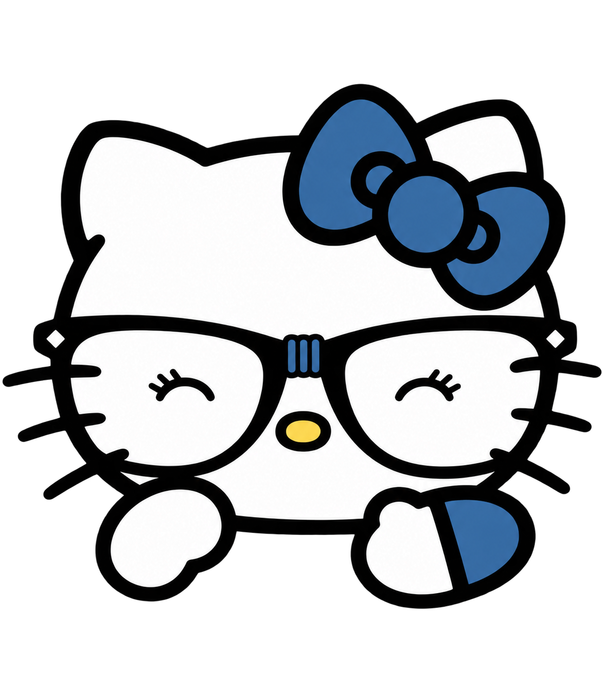

Escolhe como você tá e eu falo com você

Joguinhos pra você desestressar 💙
Estoure as bolhas tocando nelas!
Aperte o botão pra jogar toda a raiva e estresse pra fora!
Vou pensar duas vezes antes de falar.
Vou te ouvir mais e ter mais paciência.
Vou te dar todo o carinho do mundo.
Músicas que me lembram você
Enche o peito de ar...
Fecha os olhos e imagina os meus braços te envolvendo bem apertado. Sinta o meu calor, o meu cheiro, e o quanto eu te amo.